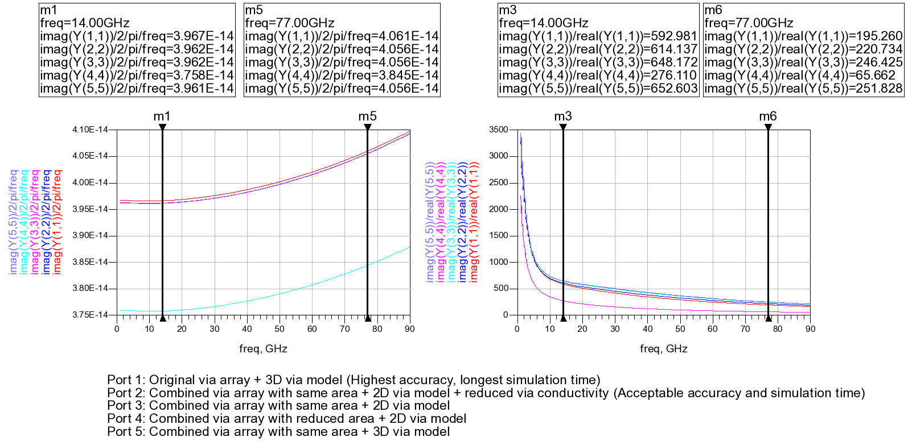

电容的电磁场仿真设置
电容是射频集成电路中的常用器件，其结构固定，设计较为简单。但由于精细结构较多，往往占用极大的仿真资源和时间。在隔直或者交流去耦应用中，电容的精确值并不是那么重要，只要足够大即可。即使在匹配电路中，些许偏差也不会对中心频率产生明显影响。因此，电容仿真不应无止尽追求精度，而是要在尽可能短的时间内获得误差不大的仿真结果。本文对比了电容仿真中不同的仿真引擎和通孔合并方法的优劣，并给出了推荐设置。
仿真引擎的选择
常用的ADS Momentum引擎有两种模式：RF和Microwave。RF模式在射频频段内提供了精确的电磁场仿真结果，且仿真速度较快。在更高频段内，由于辐射效应，只用Microwave才能提供准角结果。ADS文档中推荐在以下电路中使用RF模式：
- 电小的
- 图形复杂的
- 不辐射的
在射频频段的电容应用应当符合RF的描述，之后通过仿真对比予以验证。另一个值得注意的的Edge Mesh的设置。Edge mesh将自动的在图形边缘添加密布的mesh，用于仿真趋肤效应，常用于高层金属的仿真。之后也通过仿真比较了Edge Mesh在电容仿真中的影响。
对比实验选则了MOM电容，由5层金属，36根19.74 um长插指构成，两侧通孔采用减少面积合并。仿真在32核服务器上顺序进行，无其他负载。结果如下：
在14 GHz计算得到的仿真误差如下表：
| 电容误差 | Q值误差 | 仿真时间 | |
|---|---|---|---|
| Microwave，Edge Mesh（基准） | - | - | 90 min |
| RF | 1.66 % | 104.43 % | 1.5 min |
| Microwave | 1.70 % | 105.72 % | 7.5 min |
| RF，Edge Mesh | 0.04 % | 0.56 % | 12 min |
由此可见，Microwave和RF方法在14 GHz处的仿真结果相差不大，但Edge Mesh对Q值影响较大。由于趋肤效应，电流倾向于在导体边缘流动，减小了有效横截面积，因而损耗变大。当不添加Edge Mesh则无法仿真趋肤效应，直接导致偏高的Q值。因此，采用RF模式并选择Edge Mesh是平衡精度和仿真时间的最优结果。
通孔的合并和模型选择
仿真电容时通孔阵列如果不加处理将会产生大量的网格，从而占用仿真资源并拖慢仿真速度。通常，需要将这些通孔进行合并，形成一个大的通孔。合并的方法通常有：
- 画一个大的通孔覆盖原来所有的通孔
- 画一个有效面积相同的通孔
- 画一个大的通孔覆盖原来所有的通孔，并减小通孔导电率
其中第一种方法最为简单，但不可避免增大通孔面积，低估通孔损耗。第二种方法使得通孔面积不变，但使得通孔更加集中，改变了场的分布。第三种方法需要修改衬底文件，较为麻烦，但精度较好。
另一个值得注意的时通孔模型的选择，默认选择时3D模型。此时，所有的表面电流流向都被考虑。而2D模型只考虑垂直方向的表面电流。在通孔阵列中，由于水平方向各个通孔互相独立，因此不应该有水平方向电流。而通孔合并后，物理隔离消失，因此应当选择2D模型抑制水平方向的电流，提高仿真精度。
关于修改通孔电导率，通孔电导率的计算公式为：
其中$h$是通孔高度，$w$是通孔边长，$R$是单个通孔的电阻，这些参数都可以从代工厂提供的连线模型中找到。考虑到通孔合并，其等效电导率为：
其中是$s_r$通孔阵列的行间隔，$s_c$是列间隔。考虑$w=0.1, s_r=0.1, s_c=0.14$和$w=0.1, s_r=0.13, s_c=0.13$两种情况，其$\rho_{eff}$分别为$0.208\rho$和$0.189\rho$，因此合并时可取$\rho_{eff}=0.2\rho$。
对比实验选则了fringe电容，由5层金属，20根5 um长插指构成，采用带有Edge Mesh的RF模式仿真。仿真在32核服务器上顺序进行，无其他负载。结果如下：

在14 GHz计算得到的仿真误差如下表：
| 电容误差 | Q值误差 | 仿真时间 | |
|---|---|---|---|
| 原始版图，3D（基准） | - | - | 3 hr 5 min |
| 覆盖合并，2D，降低电导率 | 0.13 % | 3.57 % | 17 min |
| 覆盖合并，2D | 0.13 % | 9.31 % | 14 min |
| 同面积合并，2D | 5.27 % | 53.44 % | 7 min |
| 覆盖合并，3D | 0.15 % | 10.05 % | 19 min |
仿真结果表明，同面积合并仿真速度最快，其他方法仿真速度相差无几。在合并之后，2D模型确实比3D模型更准确展现了Q值，但差距不大。前述的三种方法中， 出乎意料的是同面积合并无论是电容误差还是Q值误差都明显较大，可能是由于将通孔集中到中间与电流的趋肤效应背道而驰，人为加大了损耗。而覆盖合并方法简单有效，仅在Q值上产生一些明显误差。降低电导率后，Q值误差可以忽略不计，因此，采用2D通孔模型的覆盖合并方法最为有效。当对Q值精度要求高时，可将通孔电导率将为约1/5。
总结
本文比较了几种电容的仿真方法。为了快速、准确地仿真电容，最好采用带有Edge Mesh的RF模式，通过覆盖方法合并通孔，降低通孔电导率至约1/5，并选择2D模型抑制水平电流。
- Post link: https://triblemany.github.io/archives/10ba08e5/mom-simulation.html
- Copyright Notice: All articles in this blog are licensed under BY-NC-SA unless stating additionally.